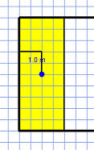

Main window
Floor layout
Contour
Area division
Area properties
Doors, dotted lines, content suppression, sensors, compliance tests
Diagrams' building elements
Floors view
Setting number of floors
Multi-floor view and cross-floor relations
Hypergraph view
Settings
Project validation
Language of HSSDR tests
Enabling tests sets
Test sets
List of symbols available in tests
Adding new relations
Tabs (4,5,6,7) allow to switch between editing of a floor layout, editing relations between floors and editing or enabling test sets. While switching between tabs main panel contents change, together with actions available in left panel.

Creation of floor layout starts with the contour. Next, contour may be divided on smaller areas, additional elements can be added and users actions may be withdrawn. In order to choose editor size, grid density and other parameters setting appropriate option in Settings is needed before starting to design. Zooming is possible with use of ("+", "-") buttons in upper part of left panel.
Left mouse click on the gridded area starts input of the contour. Then, while moving cursor on the grid another sections are added. Quitting currently edited line is possible with use of right mouse button. Contour edition ends with looping the line.

After inputting the contour it is possible to divide it into smaller areas. Left click selects an area. Clicking on a wall of selected area starts the division by initiating division line. Quitting currently edited line is possible with use of right mouse button. After reaching another wall of selected area the area is divided into two smaller areas.
Inputting properties of an area is possible after selecting it with left mouse click. Currently selected ares are yeallow, while area indicated by cursor position is blue. Another left click on selected area deselects it, as well as selection of another area. For selected area its name can be input(„Area Label” field) and its area type can be chosen from combo box. Area in square meters is displayed below.

The bottom menu consist of following elements:

First and second buttons allows for changing division line between solid and dotted. Depending of current configuration, dotted line may represent:

Pressing Add Doors button starts doors adding mode. Doors can be placed on walls only. Another click on the button ends doors adding mode.

The Undo button activates new window shoving history of divisions made in current project. Selection of a node in division tree marks areas involved in the division. With division selected, pressing the button below deletes the division. Only the divisions at the very bottom of the division hierarchy can be deleted. In order to delete division in middle of hierarchy, all below divisions have to be deleted first. Another click on Undo button closes the division window.

The clear button deletes whole project.
The check layout button is responsible for calling currently selects compliance tests. Their results are presented in validation output console(7).
Sensors represent devices like motion sensors, CCTV cameras, smoke sensors, carbon dioxide, exhaust gas or temperature sensors, etc. In order to add a sensor to the project following actions are required:

All diagrams' building elements are presented on the screen below:

While designing multi-storey buildings, number of floors has to be set prior to start of designing. Current floor for edition can be set with use of combo box in the left panel.

Ground floor contour is displayed with light grey line on all floors for reference.

In multi-floor view all floors are displayed. Ground floor is shown at the bottom. This view allows for seeing whole building and introducing multi-floor relations.
Following types of relations are available:
In order to place a relation, user has to choose desired relation type. Then, left mouse click on one of areas on a floor starts a relation. An arrow is displayed while moving cursor. Another left click on selected area on another floor adds it to relation. Right mouse click ends placing the relation.

Hypergraphs are internal data structure used to represent design in HSSDR.
Hypergraph view tab is mainly used by HSSDR creators for program analysis. Using this tab in not needed for architectural design.
Combo box on left panel changes view between single floor and whole building. Displayed elements can be moved around the board for convenience.
Zooming is possible with use of "+" and "-" in upper part of left panel.

With use of the Settings menu following parameters can be changed:
Modification of two last parameters requires usage of Apply and Reset button, in result current design is deleted. Rest of parameters can be changed in any moment with use of Apply button.

With use of language of HSSDR large family of design constraints can be expressed. Those constraints are grouped in test sets. They can concern:
Formulas of language of HSSDR tests express conditions concerning design elements like doors or areas and relations between design elements: direct ones as well as computed by the system. The internal design representation is updated after every user action. Tests are executed in background and their output is presented on validation console and by pointing non-conform areas.
Language of HSSDR tests is based on first-order logic. Additionally it contains also some useful elements needed to reason about architectural design. Adding comments is possible as well as specification of failure and success messaged for tests. Language is built of keywords, variables and predefined relations and functions, but is allows user to define their own relations.
A design contains Rooms and Areas. All spaces are Areas, while Rooms are spaces that have not been yet divided. Rooms are children of Areas in division hierarchy. Division hierarchy can be displayed by clicking Undo button in Layout Editor.
Project Validation tab is used for switching on or off tests sets and for modification of tests sets' contents.
Test sets are text files, identified by file name. List of available test sets is displayed in left part of the validation tab.
New tests sets can be added by creating new file in test_files folder.
A tests set is taken into consideration during design analysis if appropriate checkbox in enabled.
When a test set is chosen on the list, its content is displayed in right side of the tab, and can be modified
and saved with use of Save File button.

Design constraints are organized into tests sets. Tests sets enabled for a design may vary for different design types. Test set contain formulas of language of HSSDR tests and are stored in text files. They contain final conditions and auxiliary definitions.
A single test set may contain:
It is possible to add new relations in tests sets. User can decide about number of arguments:
relation_name( ) <=> formula;
or
relation_name(x,y,z,…) <=> formula;
Such relation can be then used in following formulas.
For example, tests describing fire safety constraints ( Evacuation Route RMI-2002) introduce one argument relation ZoneDoors:
ZoneDoors(d) <=> exists r in Rooms: doorsInRoom(d,r) and type(r) = "Staircase";
this relation is then used in following formulas, in this case to define another relation:
FireSafetyDoors :
FireSafetyDoors(d)<=> ExternalDoors(d) or ZoneDoors(d);
Recursion is allowed in user relations, eg:
factorial(x,y) <=> x>=1 and y>= 1 and ((x=1 and y=1) or factorial(x-1,y/x) );
UUser defined relations are visible only within a single tests set.